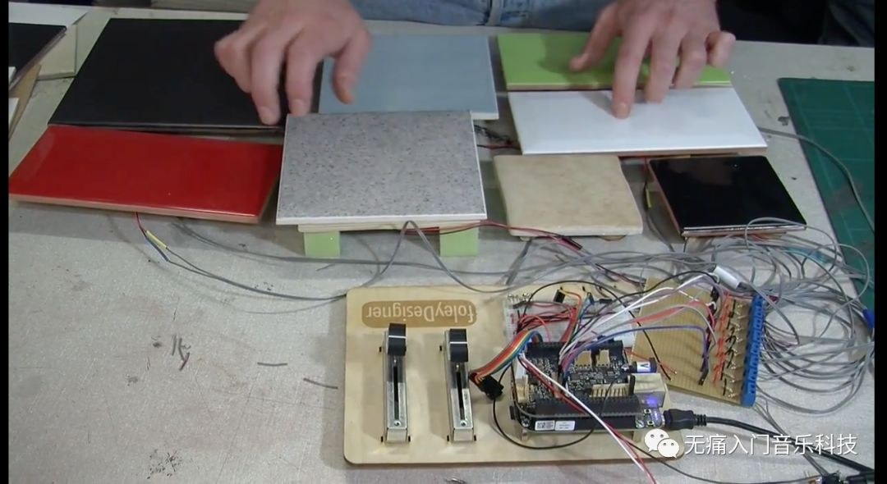
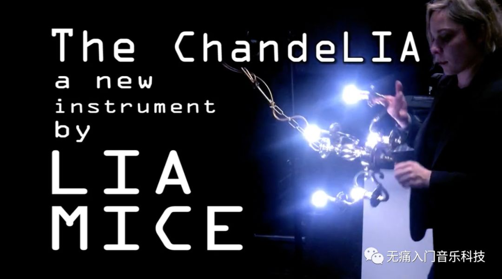
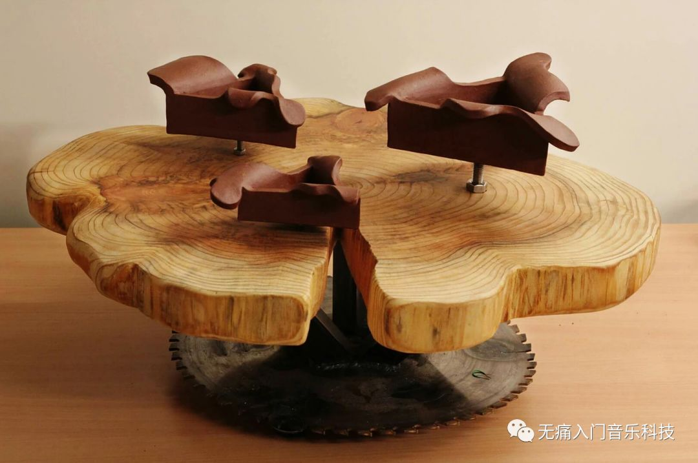

「NIME-02」日常物件在没有成精的前提下如何发声儿？
软硬件兼备，创意点足够，把身边的物件儿变成声音装置绝非难事，“好想让生活自带背景音乐”貌似也不是什么问题了呢ಠ_ಠ
♬ 本文为NIME系列第2篇文章，小视频为主 ♬
不用怀疑自己的眼神儿，以下内容你将看到：
-
墨水也能变成声音的控制器
-
针线织成的地图竟然能发声
-
敲击瓷砖怎么听见了编钟声
-
吊灯等日常物件摇身一变成了声音艺术装置
『纸墨发声器』
➥
https://blog.bela.io/2018/04/13/conductive-ink-synthesiser-paper-circuits/
☞ 作者Nicolas Lewis
这个装置的特殊之处在于可导电墨水（Bare Conductive's Electric Paint）的应用，由这种墨水画出的线条加上可移动的导线就得到了一块简单的电位计，因此能连续地改变输出电压。视频里的两条墨水痕迹可输出两种变化电压，分别对应声音的音量大小和音符高低。至于声音听起来为什么这么像特雷门琴，是因为在Pure Data里提前设定好的音色就是简单的正弦波。
『可听的编织地图』
➥
https://blog.bela.io/2017/01/18/auralfabric/
☞ 作者Alessia Milo
可穿戴技术能在时尚界一展拳脚，少不了这种导电纺织材料的功劳。而这种材料织成的地图与电容传感器一组合，就能知道用户在触摸地图上的哪块儿位置，从而播放该位置的实地录音。不得不说，这也是增强人们对“建筑物与其声音环境之间关系”的认知的一种新方式，在应用方面也能发展成适用于视障人士的特殊地图。
『瓷砖打击乐器』

➥
https://blog.bela.io/2017/01/11/percussion/
☞ 作者Robert Jack
相比于其他例子里自带导电属性的材料，瓷砖可是非常称职的绝缘材料，所以家家户户都用瓷砖装饰卫生间避免一边洗漱一边过电。这里的瓷砖之所以能感知敲击的时刻，是因为其背后附着压电传感器，敲击时引起的压力变化产生电压突变，就触发了声音的播放。
输出到底是编钟声还是其他杂七杂八的声音都可以自定义，主要的难点在于“如何快速回应敲击动作”，毕竟人耳很敏感，如果敲击发生了20毫秒以上才听到被触发的声音，所有人都会觉得“卡”，而延迟又是无法避免的，因此我们需要专用的“传感器信号➣声音信号”处理器来尽可能的控制延迟，本文里所有例子都用到了可将延迟缩短至2毫秒的开源平台Bela，在文章最后有介绍。
『声音吊灯』

➥
https://blog.bela.io/2018/03/08/chandelia-lia-mice-bela/
☞ 作者Lia Mice
本身就和电密切相关，再加上额外传感器的助攻，吊灯就可以不仅仅是吊灯，还能变成一种电声乐器。敲击吊灯既可以改变亮度也能激发声音，如果继续摆弄吊灯就能改变方向传感器的输出，以此来控制当前声音的音效，比如加一些delay或chorus的效果。
『声音艺术装置』

➥
http://www.feddetenberge.nl/sound-art-works
☞ 作者Fedde ten Berge
这位荷兰艺术家可谓把简单的物品变成声音艺术装置发挥到了极致，传感器的选择与精细的声音设计，让人不得不觉得他手里的物件如果会发声，那注定就是这个声音。也许正因为如此，他与陶艺家Frank van Os合作设计的一系列声音装置就叫做“Of Nature and Things”，上图为系列中的作品之一de Stronk。
『如果你也想做个乐器』
看了这么多例子，总结一下DIY乐器的套路：
-
选择合适的传感器，如压敏、光敏、速度/加速度、距离、电容式触摸感应等等。
-
手里有开源的单片机开发平台，如Arduino、Raspberry Pi、 BeagleBone等等，来读取传感器信号。
-
本文例子中都用到的Bela平台基于BeagleBone，它由我们C4DM科研组的Augmented Instrument Lab开发，对音频处理做了许多优化，具体介绍可观看下方视频。
-
设计传感器信号与声音参数之间的映射，比如距离大小调整音量、速度快慢对应音高等等。
-
音色可以通过Pure Data、 SuperCollider、 Max/MSP等软件设计。
-
将以上映射关系和音色设计编程写入开发平台，再给平台连上一个声音功放，大功告成！
☟ Bela介绍视频